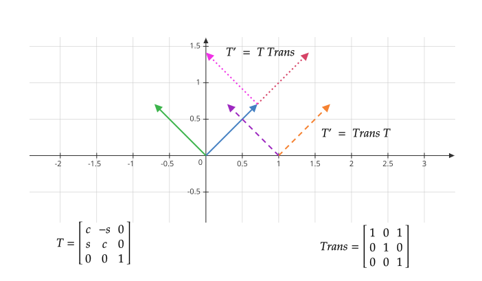
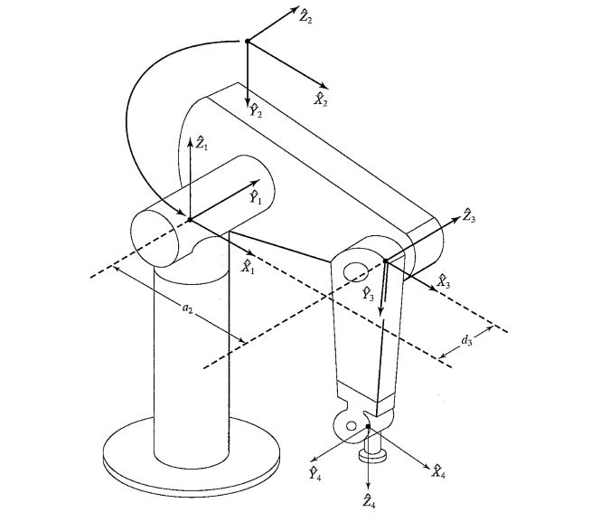
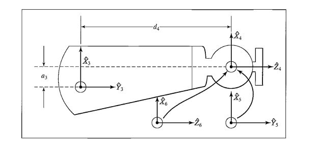
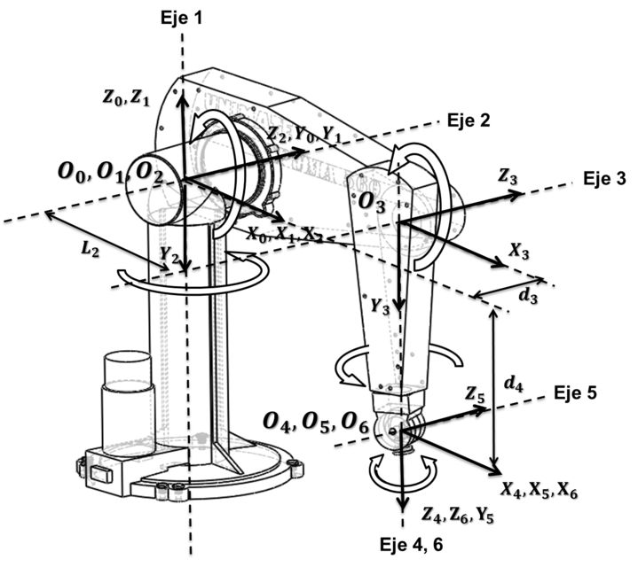

记录下机械臂D-H建模的基本过程，基本不牵扯公式推导，只记录直观解释。「还不是特别清晰」
基础知识
一般我们计算机械臂末端的位置和姿态，位置信息可以用一个三维向量表示：
P=[xyz]T(1)
姿态信息可以通过一个正交矩阵表示：
T0=⎣⎢⎡100010001⎦⎥⎤(2)
列向量表示x,y,z 轴的朝向。
旋转变换
将三维向量左乘一个旋转矩阵即可，有三个基本形式的旋转矩阵（分别绕x,y,z轴）：
Rx(θ)=⎣⎢⎡1000cos(θ)sin(θ)0−sin(θ)cos(θ)⎦⎥⎤(3)
Ry(θ)=⎣⎢⎡cos(θ)0−sin(θ)010sin(θ)0cos(θ)⎦⎥⎤(4)
Rz(θ)=⎣⎢⎡cos(θ)sin(θ)0−sin(θ)cos(θ)0001⎦⎥⎤(5)
空间中的旋转可以通过上边两两组合得到，机械臂中一般组合Rz,Rx。
平移变换
如果需要将向量P分别沿x,y,z轴平移x0,y0,z0，则可以左乘下面矩阵：
T=⎣⎢⎢⎢⎡100001000010x0y0z01⎦⎥⎥⎥⎤(6)
将旋转矩阵扩展进来，则的到齐次变换矩阵（以绕x 轴旋转后再平移为例）：
T=⎣⎢⎢⎢⎡10000cos(θ)sin(θ)00−sin(θ)cos(θ)0x0001⎦⎥⎥⎥⎤=[R0P1](7)
实际上，在机械臂中，一般也用齐次矩阵的形式表示末端的状态。在机械臂中如果有多个关节，知道每个关节相对于前一个关节的齐次变换矩阵，依次相乘就能计算出末端相对于起始位置的坐标：
Pnew=(TnTn−1⋯T1)Plocal(8)

变换算子左乘：表示该变换是相对固定坐标系变换：
- 把物体在世界坐标系下旋转90°，T′=Rz(90°)T；
变换算子右乘：表示该变换是相对动的坐标系（新坐标系）变换,多个关节的变换是“粘在”前一个姿态后面:
- 夹爪坐标系下向前走1cm，T′=TTransx(1)
标准D-H 参数表
关节坐标系间的变换无非是平移和旋转，但是无论平移还是旋转，都是以z,x 轴为基准的，当然也可以用z,y 轴，只是不常见而已。
建表步骤
- 确定每个关节的z 轴，尽量不要改变z 轴方向：
- 转动关节z 轴沿转动轴方向；
- 平动关节z 轴沿伸缩方向；
- 确定每个关节的x 轴，尽量不要改变x 轴方向：
- 选择当前关节与上一个关节z 轴的公垂线方向；
- 如果当前关节与上一个关节平行，则选择两个关节连线的方向；
- 确定（关节）坐标系原点，一般选在关节轴（的几何中心）上：
- 选择当前关节与上一个关节z 轴相交，则选择交点；
- 选择当前关节与上一个关节z 轴平行，常选择上一轴的投影或连杆长度起点，以保证 DH 参数唯一性；
- 当前关节与上一个关节 z 轴异位（既不平行也不相交）。选择公垂线与当前轴的交点作为坐标系原点。
旋转平移的顺序
ii−1T=Rotzi−1(θi)Transzi−1(di)Transxi(ai)Rotxi(αi)(9)
- 先按zi−1 轴（起始坐标系）旋转θi，使得xi,xi−1轴指向一致；
- 再沿zi−1 轴（起始坐标系）平移di，使得xi,xi−1轴重合；
- 再沿xi 轴（目标坐标系）平移ai，使得起始坐标系和目标坐标系原点重合；
- 最后xi 轴（目标坐标系）旋转αi，使得起始坐标系和目标坐标系完全一致；
改进D-H 参数表
ii−1T=Rotxi−1(θi)Transxi−1(di)Transzi(ai)Rotzi(αi)(10)
改进D-H 与标准D-H 算法相比，差异点主要在旋转平移的操作顺序，并且x轴的选择是参考当前关节与下一个关节：
- 先按xi−1 轴（起始坐标系）旋转αi，使得zi,zi−1轴指向一致；
- 再沿xi−1 轴（起始坐标系）平移ai，使得zi,zi−1轴重合；
- 再按zi 轴（目标坐标系）旋转θi，使得起始坐标系和目标坐标系姿态一致；
- 最后沿zi 轴（目标坐标系）平移di，使得起始坐标系和目标坐标系原点重合；
示例 PUMA 560 改进D-H 参数表

需要注意的是第三节机械臂的转动轴不是平行的：

1. 确定z 轴及方向

2. 根据z 轴方向确定x 轴的方向
x 轴的指向尽量保持不变，z 轴也是，这样得到的参数表会比较简洁
3. 填写参数表
| 当前坐标系i−1 |
下一个关节i |
Rx/αi |
dx/ai |
Rz/θi |
dz/di |
| 0 |
1 |
0 |
0 |
θ1 |
0 |
| 1 |
2 |
−2π |
0 |
θ2 |
0 |
| 2 |
3 |
0 |
a2 |
θ3 |
d3 |
| 3 |
4 |
−2π |
a3 |
θ4 |
d4 |
| 4 |
5 |
2π |
0 |
θ5 |
0 |
| 5 |
6 |
−2π |
0 |
θ6 |
0 |
正向过程的矩阵计算过程见参考资料[5-6]。需要注意的是，这样建立的参数表的世界坐标系原点位于第1,2 轴的交点。
参考资料
- 机械臂 运动学 D-H经典方法和改进D-H方法参数表建立
- 从零手搓人形机械臂之运动学板块（一）
- 详解PUMA 560机械臂的改进D-H参数和标准D-H参数表示
- 在线机械臂（改进）D-H 参数表可视化
- Forward Kinematics of PUMA 560
- 详解PUMA 560机械臂的改进D-H参数和标准D-H参数表示